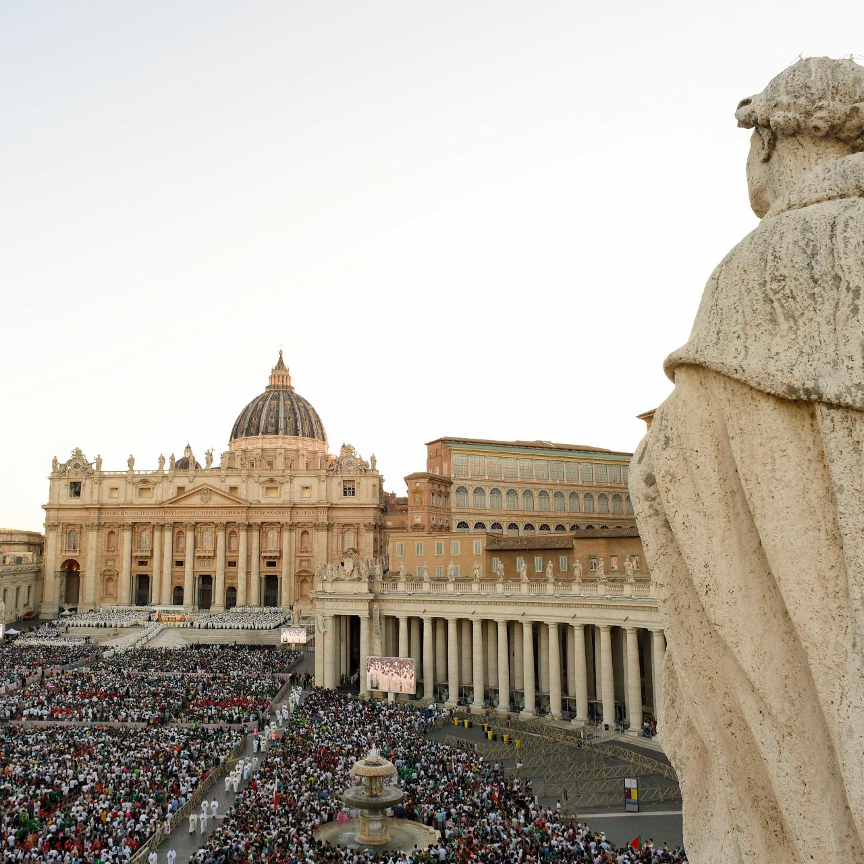
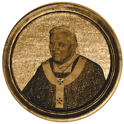
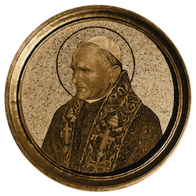
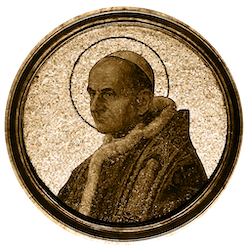
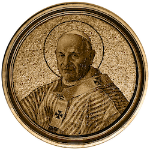
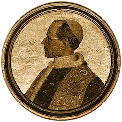

更新
消息
2026年12月10日
教宗致枢机主教团荣休院长乔瓦尼·巴蒂斯塔·雷枢机的信函
致圣彼得之环的成员们
每日简报 - 新闻办公室
2026年11月10日
安吉勒斯
每日简报 - 新闻办公室
2026年10月10日
致参加世界各国博物馆馆长会议的各位代表（比佐集团）
致安提阿希腊-梅尔基特教会主教会议的与会者
每日简报 - 新闻办公室
2026年9月10日
每日简报 - 新闻办公室
2026年8月10日
宗座大学新学年开幕弥撒
每日简报 - 新闻办公室
2026年7月10日
教宗在《爱的喜乐》通谕颁布十周年之际，会见了东方教会领袖和主教团主席。
教宗良十四世就世界传教主日一百周年发表的视频致辞
普通观众
教宗良十四世向梵蒂冈博物馆路易斯安那州艺术赞助人致以问候
每日简报 - 新闻办公室
2026年6月10日
庆典手册：宗座大学新学年开幕弥撒 [2026年10月8日]
2026年5月10日
致居住在罗马的韩国神父和修女
致梵蒂冈平信徒雇员协会和梵蒂冈妇女协会代表团
每日简报 - 新闻办公室
2026年4月10日
安吉勒斯
每日简报 - 新闻办公室
2026年3月10日
常年期第二十七主日——梵蒂冈城国梵蒂冈宪兵队弥撒
圣玛丽亚宗座条顿学院（位于坎波桑托）成立150周年之际
Calendar
最高教宗
利奥十四世
8,18.V.2025
--/--/--
弗朗西斯
13,19.III.2013
21.IV.2025

本笃十六世
19,24.IV.2005
28.II.2013

若望保禄二世
16,22.X.1978
2.IV.2005
约翰·保罗一世
26.VIII, 3.IX.1978
28.IX.1978

保罗六世
21,30.VI.1963
6.VIII.1978

约翰二十三世
28.X, 4.XI.1958
3.VI.1963

庇护十二世
2,12.III.1939
9.X.1958
庇护十一世
6,12.II.1922
10.II.1939
本笃十五世
3,6.IX.1914
22.I.1922
庇护十世
4,9.VIII.1903
20.VIII.1914
利奥十三世
20.II, 3.III.1878
20.VII.1903
庇护九世
16,21.VI.1846
7.II.1878
格里高利十六世
2,6.II.1831
1.VI.1846
庇护八世
31.III, 5.IV.1829
30.XI.1830
利奥十二世
28.IX, 5.X.1823
10.II.1829
庇护七世
14,21.III.1800
20.VIII.1823
庇护六世
15,22.II.1775
29.VIII.1799
克莱门特十四世
19,28.V, 4.VI.1769
22.IX.1774
克莱门特十三世
6,16.VII.1758
2.II.1769
本笃十四世
17,22.VIII.1740
3.V.1758
克莱门特十二世
12,16.VII.1730
6.II.1740
本笃十三世
29.V, 4.VI.1724
21.II.1730
英诺森十三世
8,18.V.1721
7.III.1724
克莱门特十一世
23,30.XI, 8.XII.1700
19.III.1721
教宗英诺森十二世
12,15.VII.1691
27.IX.1700
亚历山大八世
6,16.X.1689
1.II.1691
十一世
21.IX, 4.X.1676
12.VIII.1689
克莱门特·X
29.IV,11.V.1670
22.VII.1676
克莱门特九世
20,26.VI.1667
9.XII.1669
亚历山大七世
7,18.IV.1655
22.V.1667
无辜者X
15.IX,4.X.1644
7.I.1655
城市第八期
6.VIII, 29.IX.1623
29.VII.1644
格里高利十五世
9,14.II.1621
8.VII.1623
保罗五世
16,29.V.1605
28.I.1621
利奥十一世
1,10.IV.1605
27.IV.1605
克莱门特八世
30.I,9.II.1592
3.III.1605
第九任无罪者
29.X,3.XI.1591
30.XII.1591
格里高利十四世
5,8.XII.1590
16.X.1591
城市七期
15.IX.1590
27.IX.1590
西克斯图斯五世
24.IV, 1.V.1585
27.VIII.1590
格里高利十三世
13,25.V.1572
10.IV.1585
庇护五世
7,17.I.1566
1.V.1572
庇护四世
26.XII.1559, 6.I.1560
9.XII.1565
保罗四世
23,26.V.1555
18.VIII.1559
马塞勒斯二号
9,10.IV.1555
1.V.1555
尤利乌斯三世
7,22.II.1550
23.III.1555
保罗三世
13.X, 3.XI.1534
10.XI.1549
克莱门特七世
19,26.XI.1523
25.IX.1534
阿德里安六世
9.I,31.VIII.1522
14.IX.1523
Leo X
11,19.III.1513
1.XII.1521
尤利乌斯二世
1,26.XI.1503
21.II.1513
庇护三世
22.IX, 1,8.X.1503
18.X.1503
亚历山大六世
11,26.VIII.1492
18.VIII.1503
英诺森八世
29.VIII, 12.IX.1484
25.VII.1492
西克斯图斯四世
1,9,25.VIII.1471
12.VIII.1484
保罗二世
30.VIII, 16.IX.1464
26.VII.1471
庇护二世
19.VIII, 3.IX.1458
14.VIII.1464
卡利克斯图斯三世
8,20.IV.1455
6.VIII.1458
尼古拉斯五世
6,19.III.1447
24.III.1455
尤金四世
3,11.III.1431
23.II.1447
马丁五世
11,21.XI.1417
20.II.1431
格里高利十二世
30.XI,19.XII.1406
4.VII.1415
《无罪七世》
17.X,11.XI.1404
6.XI.1406
博尼法斯九世
2,9.XI.1389
1.X.1404
城市六号
8,18.IV.1378
15.X.1389
格里高利十一世
30.XII.1370, 3.I.1371
26.III.1378
城市五
28.IX,6.XI.1362
19.XII.1370
英诺森六世
18,30.XII.1352
12.IX.1362
克莱门特六世
7,19.V.1342
6.XII.1352
本笃十二世
20.XII.1334, 8.I.1335
25.IV.1342
约翰二十二世
7.VIII,5.IX.1316
4.XII.1334
克莱门特五世
5.VI, 14.XI.1305
20.IV.1314
本笃十一世
22,27.X.1303
7.VII.1304
博尼法斯八世
24.XII.1294, 23.I.1295
11.X.1303
塞莱斯廷五世
5.VII, 29.VIII.1294
13.XII.1294
尼古拉四世
22.II.1288
4.IV.1292
霍诺留斯四世
2.IV, 20.V.1285
3.IV.1287
马丁四世
22.II,23.III.1281
29.III.1285
尼古拉三世
25.XI, 26.XII.1277
22.VIII.1280
约翰二十一世
16,20.IX.1276
20.V.1277
阿德里安·V
11.VII.1276
18.VIII.1276
无辜的V
21.I,22.II.1276
22.VI.1276
格雷戈里·X
1.IX.1271,27.III.1272
10.I.1276
克莱门特四世
5,22.II.1265
29.XI.1268
城市四期
29.VIII,4.IX.1261
2.X.1264
亚历山大四世
12,20.XII.1254
25.V.1261
《无辜者4》
25,28.VI.1243
7.XII.1254
塞莱斯廷四世
25,28.X.1241
10.XI.1241
格里高利九世
19,21.III.1227
22.VIII.1241
霍诺留斯三世
18,24.VII.1216
18.III.1227
《无辜者三世》
8.I,22.II.1198
16.VII.1216
塞莱斯廷三世
10,14.IV.1191
8.I.1198
克莱门特三世
19,20.XII.1187
...III.1191
格里高利八世
21.25.X.1187
17.XII.1187
城市三期
25.XI,1.XII.1185
20.X.1187
卢修斯三世
1. 6.IX.1181
25.IX.1185
亚历山大三世
7,20.IX.1159
30.VIII.1181
阿德里安四世
4,5.XII.1154
1.IX.1159
阿纳斯塔修斯四世
12.VII.1153
3.XII.1154
尤金三世
15,18.II.1145
8.VII.1153
卢修斯二世
12.III.1144
15.II.1145
塞莱斯廷二世
26.IX,3.X.1143
8.III.1144
《无辜者2》
14,23.II.1130
24.IX.1143
霍诺留斯二世
15,21.XII.1124
13 or 14.II.1130
卡利克斯图斯二世
2,9.II.1119
13 or 14.XII.1124
格拉修斯二世
24.I,10.III.1118
28.I.1119
复活节二世
13,14.VIII.1099
21.I.1118
城市二期
12.III.1088
29.VII.1099
维克多三世
24.V.1086, 9.V.1087
16.IX.1087
格里高利七世
22.IV,30.VI.1073
25.V.1085
亚历山大二世
30.IX, 1.X.1061
21.IV.1073
尼古拉二世
...XII.1058, 24.I.1059
27.VII.1061
史蒂芬九世
2,3.VIII.1057
29.III.1058
维克托二世
13.IV.1055
28.VII.1057
利奥九世
2,12.II.1049
19.IV.1054
达玛苏斯二世
17.VII.1048
9.VIII.1048
本笃九世
...X.1047
... VIII.1048
克莱门特二世
24.XII.1046
9.X.1047
格里高利六世
1.V.1045
20.XII.1046
本笃九世
10.III.1045
1.V.1045
西尔维斯特三世
13 or 20.I.1045
...III.1045
本笃九世
...VIII or IX.1032
...IX.1044
约翰十九世
19.IV.1024
...1032
本笃八世
18.V.1012
9.IV.1024
塞尔吉乌斯四世
31.VII.1009
12.V.1012
约翰十八世
25.XII.1003
...VI or VII.1009
约翰十七世
16.V.1003
6.XI.1003
西尔维斯特二世
2.IV.999
12.V.1003
格里高利五世
3.V.996
...II or III.999
约翰十五世
...VIII.985
...III.996
约翰十四世
...XI or XII.983
20.VIII.984
本笃七世
...X.974
10.VII.983
本笃六世
...XII.972, 19.I.973
...VII.974
约翰十三世
1.X.965
6.IX.972
本笃五世
...V.964
4.VII.964 or 965
利奥八世
4,6.XII.963
...III.965
约翰十二世
16.XII.955
14.V.964
阿加佩图斯二世
10.V.946
...XII.955
马里努斯二号
30.X,...XI.942
...V.946
斯蒂芬八世
14.VII.939
... X.942
利奥七世
...I.936
13.VII.939
约翰十一世
...III.931
...I.936
斯蒂芬七世
...I.929
...II.931
狮子座六世
... V or VI.928
... XII.928 or I.929
约翰·X
... III or IV.914
... V or VI.928
兰多
... VII or XI.913
... III.914
阿纳斯塔修斯三世
... VI or IX.911
... VI or VIII or X.913
塞尔吉乌斯三世
29.I.904
14.IV.911
利奥五世
... VII.903
... IX.903
本笃四世
...I-V.900
...VII.903
约翰九世
..XII.897 or I.898
...I-V.900
狄奥多尔二世
...XII.897
...XII.897 or I.898
罗马努斯
...VII or VIII.897
...XI.897
史蒂芬六世
...V or VI.896
...VII or VIII.897
博尼法斯六世
11.IV.896
26.IV.896
福尔摩苏斯
6.X.891
4.IV.896
史蒂芬五世
...IX.885
14.IX.891
阿德里安三世
17.V.884
...VIII or IX.885
马里努斯一世
... XII.882
15.V.884
约翰八世
14.XII.872
16.XII.882
阿德里安二世
14.XII.867
...XI or XII.872
尼古拉一世
24.IV.858
13.XI.867
本笃三世
...VII, 29.IX.855
17.IV.858
利奥四世
...I,10.V.847
17.VII.855
塞尔吉乌斯二世
25.I.844
27.I.847
格里高利四世
... IX.827, 29.III.828
25.I.844
情人节
... VIII.827
...IX.827
尤金二世
... II-V.824
...VIII.827
逾越节一
25.I.817
... II-V.824
史蒂芬四世
22.VI.816
24.I.817
利奥三世
26,27.XII.795
12.VI.816
阿德里安一世
1,9.II.772
25.XII.795
史蒂芬三世
1,7.VIII.768
24.I.772
保罗一世
... IV, 29.V.757
28.VI.767
斯蒂芬二世
26.III.752
26.IV.757
扎卡里
3.XII.741
15.III.752
格里高利三世
18.III.731
28.XI.741
格里高利二世
19.V.715
11.II.731
康斯坦丁
25.III.708
9.IV.715
西辛尼厄斯
15.I.708
4.II.708
约翰七世
1.III.705
18.X.707
约翰六世
30.X.701
11.I.705
塞尔吉乌斯一世
15.XII.687
7.IX.701
康农
23.X.686
21.IX.687
约翰五世
23.VII.685
2.VIII.686
本笃二世
26.VI.684
8.V.685
利奥二世
... I.681, 17.VIII.682
3.VII.683
阿加索
27.VI.678
10.I.681
唐纳斯
2.XI.676
11.IV.678
阿德奥达图斯二世
11.IV.672
16.VI.676
维塔利安
30.VII.657
27.I.672
尤金一世
10.VIII.654
2.VI.657
马丁一世
5.VII.649
16.IX.655
西奥多一世
12.X, 24.XI.642
14.V.649
约翰四世
... VIII, 24.XII.640
12.X.642
塞维里努斯
... X.638, 28.V.640
2.VIII.640
霍诺留斯一世
27.X.625
12.X.638
博尼法斯五世
23.XII.619
23.X.625
Deusdedit 或 Adeodatus I
19.X.615
8.XI.618
博尼法斯四世
25.VIII.608
8.V.615
博尼法斯三世
19.II.607
10.XI.607
萨比尼安
... III, 13.IX.604
22.II.606
格里高利一世
3.IX.590
12.III.604
佩拉吉乌斯二世
26.XI.579
7.II.590
本笃一世
2.VI.575
30.VII.579
约翰三世
17.VII.561
13.VII.574
佩拉吉乌斯一号
16.IV.556
4.III.561
维吉利乌斯
29.III.537
7.VI.555
西尔维利乌斯
8.VI.536
... 537
爱加佩图斯一世
13.V.535
22.IV.536
约翰二世
31.XII.532, 2.I.533
8.V.535
博尼法斯二世
20 o 22.IX.530
17.X.532
菲利克斯四世
12.VII.526
20 or 22.IX.530
约翰一世
13.VIII.523
18.V.526
霍尔米斯达斯
20.VII.514
6.VIII.523
辛马库斯
22.XI.498
19.VII.514
阿纳斯塔修斯二世
24.XI.496
19.XI.498
格拉修斯一世
1.III.492
21.XI.496
费利克斯三世
13.III.483
25.II o 1.III.492
辛普利丘斯
3.III.468
10.III.483
希拉里厄斯
19.XI.461
29.II.468
狮子座一世
29.IX.440
10.XI.461
西克斯图斯三世
31.VII.432
19.VIII.440
塞莱斯廷一世
10.IX.422
27.VII.432
博尼法斯一世
28,29.XII.418
4.IX.422
佐西姆斯
18.III.417
26.XII.418
无辜的我
22.XII.401
12.III.417
阿纳斯塔修斯一世
27.XI.399
19.XII.401
西里修斯
15 o 22 o 29.XII.384
26.XI.399
达玛苏斯一世
1.X.366
11.XII.384
利伯留斯
17.V.352
24.IX.366
尤利乌斯一世
6.II.337
12.IV.352
标记
18.I.336
7.X.336
西尔维斯特一世
31.I.314
31.XII.335
米尔提亚德斯或梅尔基亚德斯
2.VII.311
10.I.314
优西比乌斯
18.IV.309
17.VIII.309
马塞勒斯一号
306
16.I.309
马塞利努斯
30.VI.296
25.X.304
盖厄斯
17.XII.283
22.IV.296
尤蒂基亚努斯
4.I.275
7.XII.283
费利克斯一世
5.I.269
30.XII.274
狄奥尼修斯
22.VII.259
26.XII.268
西克斯图斯二世
30.VIII.257
6.VIII.258
史蒂芬一世
12.III.254
2.VIII.257
卢修斯一世
... VI or VII.253
5.III.254
科尼利厄斯
6 or 13.III.251
... VI.253
法比安
... 236
20.I.250
安特鲁斯
21.XI.235
3.I.236
庞提亚努斯
21.VII.230
28.IX.235
城市 I
222
230
卡利斯图斯一世
218
222
泽菲里努斯
198
217 or 218
维克托一世
186 or 189
197 or 201
埃琉特里乌斯
171 or 177
185 or 193
索特鲁斯
162 or 168
170 or 177
阿尼塞图斯
150 or 157
153 or 168
庇护一世
142 or 146
157 or 161
希吉努斯
138
142 or 149
特莱斯福鲁斯
127 or 128
137 or 138
西克斯图斯一世
117 or 119
126 or 128
亚历山大一世
108 or 109
116 or 119
埃瓦里斯图斯
99 or 96
108
克莱门特
92
99
阿纳克莱图斯或克莱图斯
80
92
莱纳斯
68
79
彼得
64 or 67